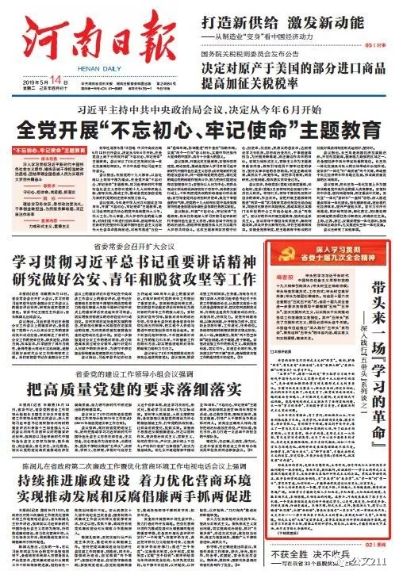
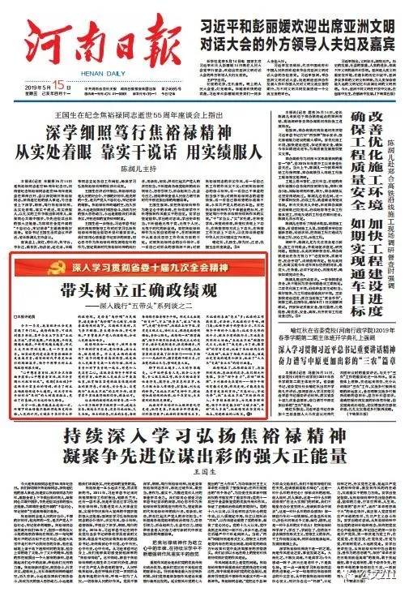
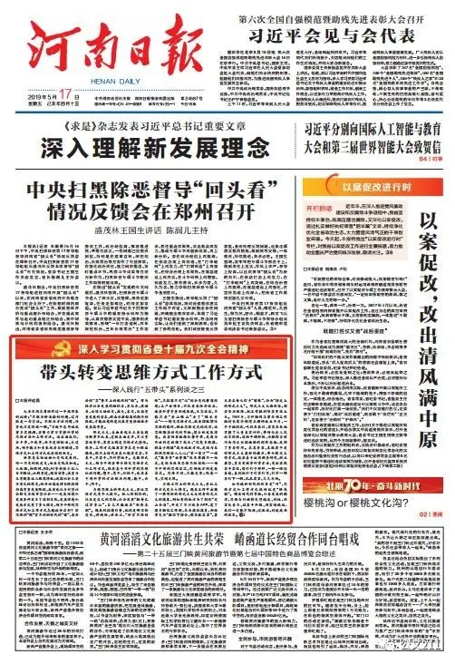
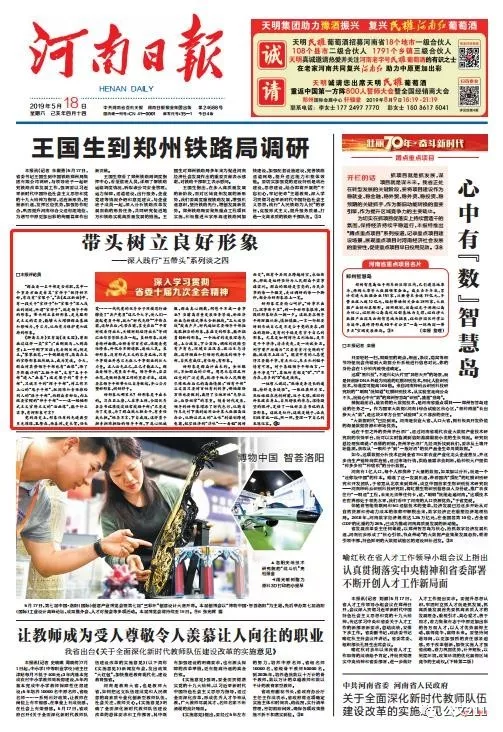
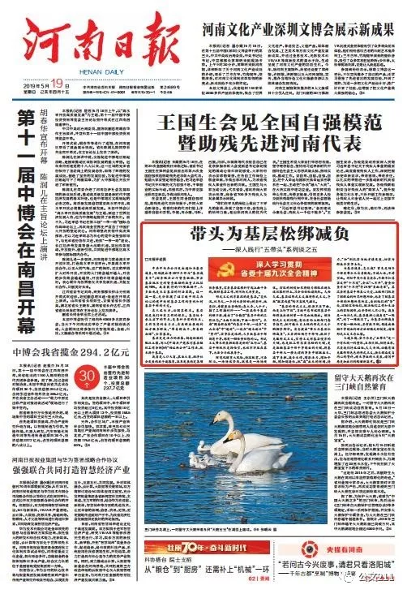

河南日报系列评论文章《深入践行“五带头”系列谈》
- 主页 /
- 新闻中心 /
- 党的建设
河南日报系列评论文章《深入践行“五带头”系列谈》

带头来一场“学习的革命”——深入践行“五带头”系列谈之一
编者按
带头把学习习近平新时代中国特色社会主义思想和党的十九大精神引向深入；带头树立正确政绩观；带头转变思维方式、工作方式；带头树立良好形象；带头为基层松绑减负。继省委十届六次全会提出“五比五不比”后，省委十届九次全会进一步要求各级领导干部做到“五转”“五带头”，坚决克服形式主义，以实践实干实效推动各项工作落细落实落到位。其中“五带头”抓住了克服形式主义、领导必须带头这个关键。本报自今日起推出“深入践行‘五带头’系列谈”，聚焦诠释“五带头”的丰富内涵、现实意义和实践要领，敬请关注。
希望的田野容不得形式主义的“稗草”。甄别、铲除“稗草”，首先要有“火眼金睛”，要有“最强大脑”。“最强大脑”从哪里来？从学习中来。
“五带头”中，排第一位的是“带头把学习习近平新时代中国特色社会主义思想和党的十九大精神引向深入”，充分说明加强理论学习对克服形式主义的重要性。当前河南发展态势喜人，但也要看到，同过去相比，我们的任务不是轻了，而是更重了，脱贫攻坚这场硬仗，越到最后责任越大，乡村振兴史无前例，更没有模式可以照搬。花花哨哨的形式主义解决不了任何实际问题，来一场“学习的革命”，不断提升学习质量，才能解决形式主义突出问题。
毛泽东同志曾指出，有了学问，好比站在山上，可以看到很远很多东西。没有学问，如在暗沟里走路，摸索不着，那会苦煞人。有的领导干部说，每次到中央开会，像上了一堂马克思主义理论和实践的大课，听了以后方向更明晰、心里更亮堂。缺少方向感，是形式主义一大特征，首先是宗旨意识淡薄，迷失了初心这个最根本的方向，其次是发展路径模糊，看不清时代潮流，比如一个地方生态环境恶化，说明对新发展理念理解还不深不透。加强学习，既“抬头看天”，又“脚下看路”，才能走出形式主义的迷雾，坚定信念，不畏浮云遮望眼；紧跟时代，把准发展“方向盘”。
形成良好的学风，是解决思想作风、工作作风、领导作风和生活作风等方面问题的一把金钥匙。华而不实、投机取巧、被动应付……学习上的形式主义非但不能促进学习，反而会助长其他种种形式主义的泛滥。学风正带动作风正，配齐良好学风这把金钥匙，变“要我学”为“我要学”，从“学一阵”到“学一生”，学思用贯通、知信行统一，才能带动作风建设往深里走、往实里走。
每个人的世界都是一个圆，学习是半径，半径越大，本领越高强，拥有的世界越广阔。加强学习才能避免陷入少知而迷、不知而盲、无知而乱的困境，克服本领不足、本领恐慌、本领落后的问题。这些年，河南发展抓住了很多重大机遇，一个突出原因就是我们的干部通过学习，心更明，眼更亮，知识更齐备，判断更准确，行动更迅速。本领不够，形式来凑，文件、简报满天飞，挖空心思编造“新思路”、杜撰“新经验”，督查检查随意“一票否决”，同一事项议而不决、反复开会……一些干部热衷于形式主义的背后，实则是知识“欠费”、本领恐慌。形式主义的“天敌”是实事求是，实事求是就要用科学的理论指导实践，通过学习不断提升本领，增强工作的科学性、预见性、主动性，才能有的放矢下真功，而不是万般无奈搞形式。
学习不够，体会不深，必然在实践中走向形式主义。学习不够，有的是方向不明，不自觉地走向形式主义，有的是本领恐慌，用形式主义来掩饰学风不纯，总归是要露出马脚，卖豆腐的扎个大戏台，惹人耻笑。克服形式主义，就要学习、学习、再学习，实践、实践、再实践。
带头来一场“学习的革命”，省委为我们上了生动一课。今年全国两会，习近平总书记在参加河南团审议时发表重要讲话，对实施乡村振兴战略、做好“三农”工作指路领航。省委在现场学习，回省里组织学习、进行传达，又组成15个调研组下去进行专题调研，一个多月以来，在这方面下了不少深功夫，在充分掌握情况之后，才郑重召开省委全会，推动乡村振兴的河南实践向纵深发展。不搭“架子”、不搞形式、不务“虚功”，联系实际、坚持跟进、融会贯通学习中央精神，真正做到把学习内容“嚼碎了”“咽下去”“品出味道”，我们才能以学习的高质量，带来作风建设的高质量，以党的建设高质量，推动经济发展高质量。
选择了学习，就是选择了进步。领导干部带头，不断把学习引向深入，层层示范推动工作层层落实，我们的事业就能无往而不胜。

带头树立正确政绩观——深入践行“五带头”系列谈之二
今年一季度，我省经济社会发展实现了开门红。成绩的取得，可以找到很多原因，其中全省上下落实“五比五不比”，学的氛围、严的氛围、干的氛围越来越浓，干部作风越来越实，形式主义不断得到克服，是一个重要因素。切实以党的建设高质量推动经济发展高质量，谱写新时代中原更加出彩的绚丽篇章，领导干部带头树立正确政绩观很关键。
“心中想着老百姓，就不会只为脸面争虚荣；心中想着老百姓，就不会贪图私利把百姓坑”。豫剧《焦裕禄》中这两句朴实直白的唱词，讲清了树立正确政绩观这个大道理。被兰考百姓亲切称为“焦桐”的大树高耸挺立，见证了打基础、利长远的恒久价值。
为官一任，能不能真正造福一方，所留下的业绩能不能经得起历史的检验、人民的评判，关键在于秉持什么样的政绩观。是拎着“乌纱帽”为民做事，还是捂着“乌纱帽”为己做官，检验着政绩观的高下。只摘桃不栽树，只飞奔不铺路，甚至竭泽而渔、寅吃卯粮，严重背离共产党人的政绩观，会被人民群众所唾弃。
政绩观犹如一面镜子，映照着领导干部的宗旨意识、党性修养、政治立场、格局境界。什么是正确的政绩观？这个问题并非高深难懂，就是把为人民服务变成一生的行动，把对上负责和对下负责统一起来，对党和人民没有二心。这就要求领导干部牢记党的宗旨，始终把人民放在心中最高位置，把贯彻落实党的政策体现到群众的获得感、幸福感、安全感上，自觉践行“五比五不比”的工作导向，以实学实干实效赢得组织信任、群众认可。
让正确的政绩观之树常青，跟一个人一辈子做好事不做坏事一样，说起来容易，做起来不容易，需要持之以恒、久久为功。功名的诱惑、利益的蛊惑，每时每刻都考验着领导干部。形式主义出现“新变种”、穿上“隐身衣”、披上“新马甲”、走进“青纱帐”，病因在上行下效，实质是主观主义、功利主义，根源是政绩观错位、责任心缺失。政绩观一旦“跑冒滴漏”，领导干部不仅会成为形式主义的受害者，还会变成制造者、推波助澜者，用鲜亮美丽的外表掩盖矛盾和问题，扎扎实实的落实成了扫帚顶门——杈多劲小……凡此种种，损害党群干群关系，污染党内政治生态，影响发展大业。
脚下的泥土越多，人生的芳华越美。心中始终装着人民，就会心无旁骛、专心致志地工作，既全力做让老百姓看得见、摸得着、得实惠的实事，也尽力做为后人作铺垫、打基础、利长远的好事。“五比五不比”是柳叶刀，挖出侵蚀政绩观的病根，让干在实处、走在前列的肌体更强健。
比谁对中央精神和上级部署吃得更透、把得更准，不比谁会开得最快、材料报得最早；比谁的实际增长点多，不比谁的表面“亮点”多；比谁的工作载体实、方法新，不比谁的口号响、调门高；比领导班子的整体合力，不只比领导干部的个人能力；比攻坚克难的战斗力、解决矛盾的执行力，不比轰轰烈烈的大场面。“五比五不比”剑指形式主义，比出了“我是谁、为了谁、依靠谁”的宗旨意识，比出了焦裕禄同志的“三股劲”，比出了功成不必在我、功成必定有我的境界和担当，比出了“大玉米”变成“金玉米”的精彩画卷。
政绩观正了，扎根群众深了，再猛烈的风雨，再汹涌的波涛，我们都无所畏惧。坚持“四个着力”，打好“四张牌”，乡村振兴走在前列……领导干部唯有能力更强、作风更硬，才能肩负起高质量发展的重任。“不忘初心、牢记使命”，把“五比五不比”不断推向深入，干事创业敢担当、为民服务解难题，领导干部定能当好“关键少数”，带好“绝大多数”，把政绩写在坚实的大地上、写进群众的心坎里。

带头转变思维方式工作方式——深入践行“五带头”系列谈之三
毛泽东同志曾经作过一个很形象的比喻：“不解决桥或船的问题，过河就是一句空话。不解决方法问题，任务也只是瞎说一顿。”习近平总书记也曾多次强调，要努力学习掌握科学的思维方法和工作方法。这启迪我们，会干事、干成事，而不是瞎忙活、走过场，领导能力和素养就要与时俱进，思维方式和工作方式也要因时而变。
世界是永恒运动和变化发展的，唯一不变的就是变，而且变化在加速。大数据、物联网、5G、AI等新技术让人目不暇接，社群重建、圈层消费、流量为王等现象让人眼花缭乱；我国社会主要矛盾已经转变，经济由高速增长阶段转向高质量发展阶段，我省也从乡村型社会转变为城市型社会……发展环境和发展条件发生了深刻变化，发展理念和发展方式有了重大转变，领导干部的思维方式和工作方式怎能故步自封？旧思维的“图”索不到新时代的“骥”，老办法的“票”登不上新航程的“船”。作为经济社会发展的组织者、参与者、推动者，必须主动识变、应变、求变，与高质量发展的要求、群众水涨船高的期待相匹配，才能以党的建设高质量推动经济发展高质量。
形式主义，表面看起来主要表现为做事不认真、爱做表面文章、不注重实效等等，实质上则是思维方式僵化、教条，工作方式偏离实事求是和群众路线，跟不上时代要求和现实需要，不真干、不实干、不科学地干。克服形式主义，领导干部要带头转变思维方式和工作方式，既要善于用科学的思维认识问题，想干、愿干、积极干，也要善于用科学的方法解决问题，能干、会干、巧干。
力避思维上的形式主义，要让思维方式有个大提升。把人限制住的，往往是自己的思维，社会发展“轻舟已过万重山”，自己不能还在“刻舟求剑”。现在的招商引资，比的是哪里制度优、讲规矩、讲法治，“新官不理旧账”、只招商不引“治”就会恶化营商环境；上产业项目，不仅要看经济效益，还要科学考量环境承载、生态效益，不能只要“金山银山”丢了“绿水青山”……转变思维方式，就要摆脱惯性思维的羁绊，跳出思维定式的泥潭，让思维踏准时代的节拍、契合新发展理念。我省四条丝路优势并举，是因为开放的意识强了起来；“信息多跑路，群众少跑腿”成为施政方向，是因为互联网思维深入人心；“单一窗口”“一站式”服务等“放管服”改革举措不一而足，是因为改革思维不断深化……领导干部的思维层次，引领地方的发展层次。思维不对，只能受罪；观念一变，空间无限。
力避工作上的形式主义，要让工作方式发生大转变。现在工作中出现了一些用新的形式主义反对老形式主义的现象，例如有的地方为了刹住“文山会海”，开发了不少政务APP，建了很多微信工作群，本为提效减负，却经常变为“微信下指令、群里抓落实”，甚至要求每天打卡“留痕”，沦为“指尖上的形式主义”。形式主义无论新老，都要坚决破除，把工作扭到唯实重效上来。1961年，习仲勋同志曾率领工作组到长葛持续蹲点调研近五个月，一竿子插到底，吃住在农村，实实在在地掌握了大量真实材料，带领全县人民抗旱保粮，退赔平调财物，为扭转当时河南乃至全国面临的困难局面，发挥了重要作用。求真务实、真抓实干是对形式主义最好的摒弃，带头转变工作方式，就要善于运用调查研究、树立典型、重点突破等科学方法，突出实践实干实效，像钉钉子那样，一锤一锤接着敲，直到把钉子钉实钉牢，钉牢一颗再钉下一颗，扎扎实实、久久为功。
如果说新时代的任务是“河”，思维方式和工作方式就好比是“桥或船”。踏着时代的节拍，和着发展的韵律，思维与行动转变得迅速、到位，向实处着力、以实干开路、用实绩说话，我们一定能穿险滩、过激流，到达成功的彼岸。

带头树立良好形象——深入践行“五带头”系列谈之四
“群众看一名干部是否称职，其中一个重要方面是看其‘官样子’做得好不好，有没有‘官架子’。”在《之江新语》中，有一段关于“官样子”和“官架子”深入浅出的阐述，所谓“官样子”，就是领导干部的形象。带头树立良好形象，是克服形式主义的需要，能够大大增强群众基础和影响力、号召力，从而有力维护党和政府的形象。
《聊斋志异》里有篇《夜叉国》，曾刻画过这样一类“官”：“出则舆马，入则高堂；上一呼则下百诺；见者侧目视，侧足立。”寥寥数笔，一个铺排造作、高高在上的官僚形象跃然纸上，成为笑谈。今天，群众对某些领导干部也有“画像”，除了耳熟能详的“三拍干部”，又有“五手干部”进入“画卷”：端足架子的“背手干部”，只说不干的“挥手干部”，对工作不上心的“甩手干部”，把困难和责任推给别人的“推手干部”，向群众索好处、向上级要官帽的“伸手干部”……这一幅幅形式主义官僚主义的“活画像”，能干什么实事，有何形象可言？
党的历史上，形象伟岸的先进典型星光璀璨，孔繁森、杨善洲、史来贺、任长霞……一代代党的优秀分子用模范行动擦亮了“共产党员”这几个大字，使人们一提起党员干部，就和“时代先锋”“冲锋在前、退却在后，吃苦在前、享受在后”“平常时候看得出来、关键时刻站得出来”等词汇语句紧紧联系在一起。良好形象，反映着精神面貌，诠释着宗旨意识，体现着党性修养，外化为不懈进取、造福人民。良好形象，没有形式主义的容身之地，只有干事创业并感召无数人干事创业的巨大力量。正人必先正己，正己才能正人。群众看领导，党员看干部。领导带头、层层示范，是做好各项工作的重要方法。这就要求领导干部带头从自身做起，齐心合力塑好形象、树好样子。
好形象从哪里来？好形象是干出来的。刀在石上磨，人在事上练，全国优秀县委书记廖俊波经常鼓励干部：“只要是为了发展、为了群众就大胆去干，有责任我来担。”桃李不言，下自成蹊，这样勇于担责担难担险的领导干部，下属心悦诚服，群众真心拥戴，何愁干不成一番事业？当前高质量发展任务紧迫，新经济新业态新模式带来全新挑战，“三大攻坚战”鼓角声声，时代迫切需要领导干部挺起敢担当的形象、善应变的形象、能开拓勇创新的形象。一个地方的发展理念先进，上合政策、下合实际，调结构促转型有声有色，环境日益改善，政治生态清朗，这样顺应和引领时代潮流的领导干部，自然有威信、有佳绩、有形象。
好形象是群众评出来的。金杯银杯，不如群众的口碑。周恩来总理之所以受到广泛爱戴，就源于他为人民鞠躬尽瘁死而后已的高尚情操；“四有干部”谷文昌只要对百姓有利的事，哪怕排除万难也要做到，赢得了当地百姓“先祭谷公，后祭祖宗”的尊重。随着时代发展，领导的好形象增添了时代色彩，从骑自行车走村下镇到运用云计算大数据高效办公，从脚沾泥土的“土味”到谋划跨境电商、航空经济的“洋味”……看似“因时而变”，但有个共同点跨越时空、永恒传承，那就是始终坚持为人民群众干实事谋实利。群众的眼睛是雪亮的，为民办事的每一个微笑，走访调研的每一个脚印，都会为好形象添上一笔。
好形象需要精心呵护。“好事不出门，坏事传千里”，树一个好形象很难，但毁坏形象却在一朝一夕。这就要求领导干部防微杜渐、慎独慎微，一言一行都要时刻告诫自己是不是合乎党的要求、群众的期盼，是有利于还是有害于自己的形象。尤其是如何对待名利地位，是不是干干净净、清清爽爽，是一块试金石。列宁曾严厉痛斥“只要有贪污受贿的可能，就谈不上政治”。现实中有的人总觉得只要能干事，有点私心、牟点私利似乎情有可原。对于各级领导干部而言，一身干净是“1”，其他所有都是“0”，“1”不存在，再多的“0”也是徒然。
一位哲人说过，“教诲是条漫长的道路，榜样是条捷径”。一张经典照片里，焦裕禄站在泡桐树前，双手叉腰，破旧的外衣披在身上，自然舒展的体态，深情凝望的眼神，定格了一位好县委书记的真实形象。这就是标杆，这就是镜子，让我们经常比一比、照一照，整理一下自己的衣冠仪容。
带头为基层松绑减负——深入践行“五带头”系列谈之五
中共中央办公厅发出通知为基层减负，明确提出将2019年作为“基层减负年”；国务院办公厅督查激励，市县基层地区受到督查激励的数量占比接近90%。我省获得的19项激励中，大多数也是来自基层的鲜活实践。这一减一奖，充分体现了以习近平同志为核心的党中央对基层工作的重视和对基层干部的关爱。
求木之长者，必固其根本。基层就是我们所有工作的根本。基层位于承上启下的节点，是各种矛盾的焦点、工作落实的着力点，在离群众最近的地方服务群众，“带着群众干、帮着群众赚”，全靠基层。
基层更是活力的源泉，创造经验的肥沃土壤，写入《中国共产党农村基层组织工作条例》的“四议两公开”工作法，就来源于基层。
我省是人口大省、农业大省，经济社会发展的底子还很薄，改革发展稳定各项任务很重，需要基层这根针穿起上面千条线，做好基层工作，对河南尤为重要。
形式主义祸害最深的是基层。“夏秋汛，秋冬火，一年到头要防好；树要种，地要扫，房前屋后要确保；各大办，人手少，搞了工作搞材料……”一段流传于基层的顺口溜，道出了“全能型”基层干部的工作状态。“上面千把锤，下面一根钉”。本应“围着群众转”的基层干部，一边在“文山会海”中“遨游”，一边在“迎来送往”中“费神”，实事求是地讲，大多数基层干部都愿干事，都有一颗任劳任怨的心。形式主义带来的负担就像是新的“五行山”，基层干部纵然是孙悟空，也被牢牢压在其下，无法全力施展身手。
防范化解重大风险、精准脱贫、污染防治，一场场攻坚战，就像是一场场硬仗。打仗的时候如果将精力都耗在迎来送往报材料上，只会白白贻误战机。久而久之，基层以形式主义应对形式主义，导致“脱实向虚”的不良风气滋生。
“基层的形式主义，根源不在下面，而是上行下效”，习近平总书记同基层干部群众座谈时曾一针见血地指出。解决形式主义的问题，有必要给上级部门念紧箍咒，把可能来自上级的形式主义手脚捆紧绑牢。省委提出“带头为基层松绑减负”，主要讲给领导干部听，抓住了克服形式主义、官僚主义对基层侵害的关键，也是把工作落实落细的关键，更是激励基层干部干事创业的关键，将基层干部从一些无谓的事务中解脱出来，减下负担、减去束缚，增添活力、增加干劲，增加创造性，把“减”出来的时间、精力，“加”到扎实为地方谋发展、切实为群众办实事上来。
为基层减负，怎么减？首先是领导干部要带头从自身做起，不说大话，不讲空话。对标中央和省委要求，不折不扣落实文件“十不发”，会议“八不开”，督查检查考核“十不得”等28项“负面清单”。其次要对基层干部真心关爱，上级部门既要了解群众的所思所想所盼，也要了解基层干部的所想所愿所求，看到他们的“苦”处，理解信任他们，解决他们工作和生活上的实际困难，让辛苦的人不心苦。减负是一场持久战，基层最担心减负是“一阵风”，刮了一阵就没了。为基层松绑减负不可能一蹴而就，要常抓不懈，创造出激励干事创业的好方法好模式好制度，消除形式主义生存土壤。
大道至简，实干为要。“五带头”是一个有机统一的整体、互相关联、相得益彰，只要我们持之以恒、久久为功，必能有效克服形形色色的形式主义，换来群众发自内心的赞许，迎来事业的大发展，谱写中原更加出彩的绚丽新篇章。（来源：《河南日报》2019年5月19日01版）